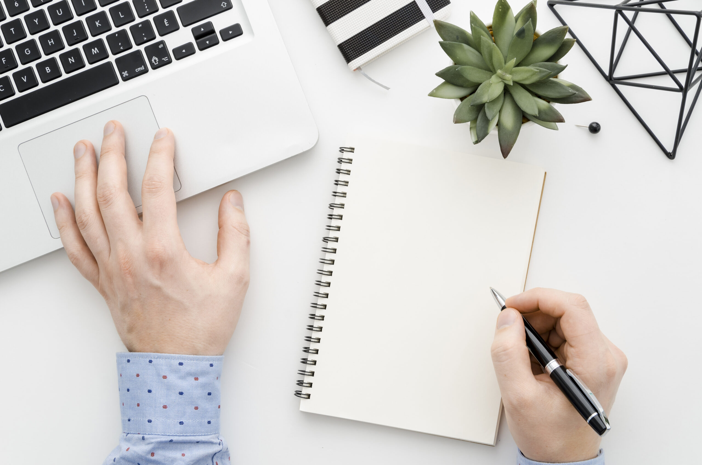
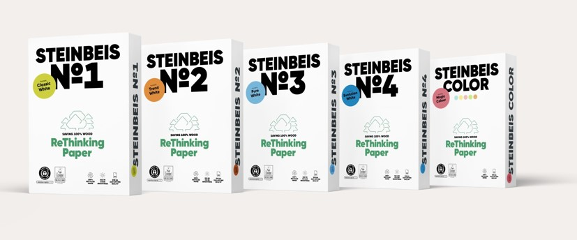
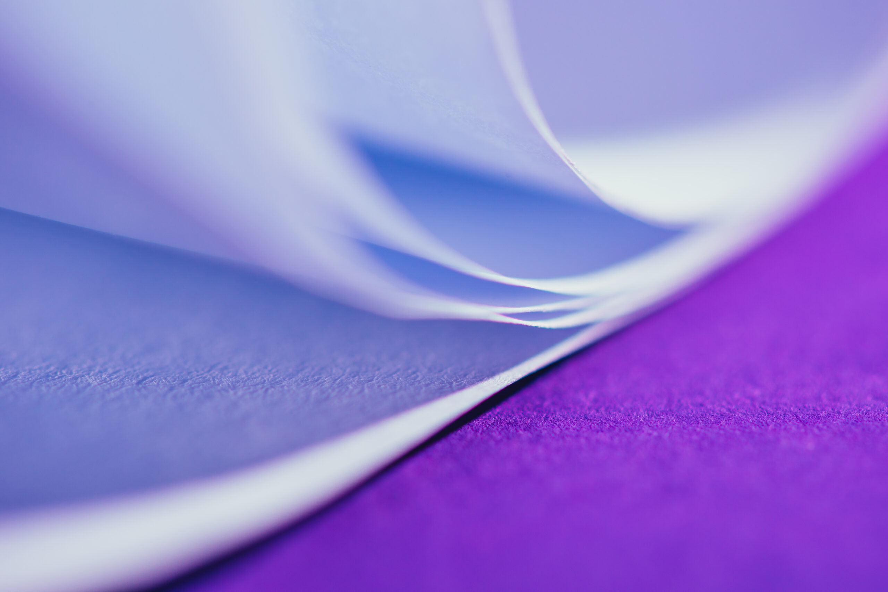
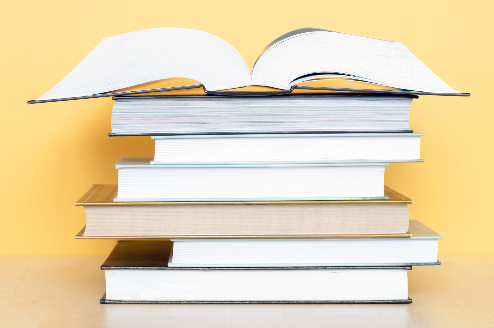

Grafisch
Grafisches Papier mit ansprechendem Touch, geeignet für die Veredelung auf den modernen und schnell laufenden Druck- und Verarbeitungsanlagen, ökonomisch und ökologisch – unser Papier kann das:

Hochwertiges Schreibpapier als repräsentatives Briefpapier, Schulheft- oder Zeichenpapier mit definierter Oberfläche und Tintenaufnahme für den Schulbedarf, farbige Kartons für die Herstellung von Mappen oder Register – wir haben die Lösung für Sie.

STEINBEIS konzentriert sich seit über 40 Jahren auf die Herstellung umweltfreundlicher Büropapiere aus 100 % Altpapier nach den strengen Umweltschutzrichtlinien von „Blauer Engel" und „Ecolabel" und ist heute Marktführer in diesem Segment. Die Papiere sind leistungsstark, multifunktional und in den Formaten A4 und A3 zu 80 g/m² erhältlich, in weiss oder fünf weiteren Farben.
In der Schweiz beliefern wir mehrere Papiergrosshändler und Wiederverkäufer, die die Endkunden betreuen. Wir geben Ihnen gerne weitere Auskünfte, oder Sie lesen nach unter www.stp.de.

Frischfaserpapiere in 28 intensiven Farben im Grammaturbereich 60–250 g/m² – teilweise ab Fabriklager lieferbar – lancierten wir erfolgreich im Schweizer Markt für unterschiedliche und auch für anspruchsvolle Anwendungen.
Das Programm der farbigen Papiere wird abgerundet durch verschiedene Weisstöne, die auch kombinierbar sind mit Oberflächen von superglatt bis gerippt und Papier für die Herstellung von Luxus-Verpackungen, als Buchdruck-Papier und last but not least als feuchtigkeits- und fettdichtes Papier für die Herstellung von Lebensmittel-Verpackungen.

Dünndruckpapiere – neu ab 28 bis 60 g/m², in weiss und crème, ideal für Packungsbeilagen, Nachschlagewerke und religiöse Bücher.
Benötigen Sie mehr Informationen über grafisches Papier?
Fragen Sie uns!